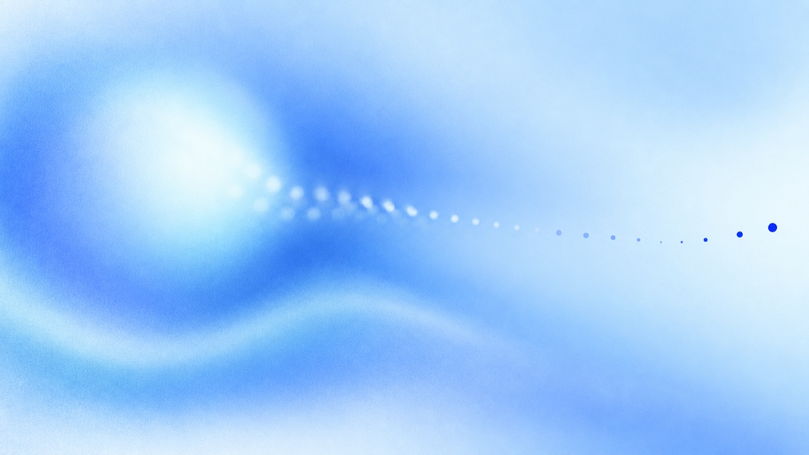
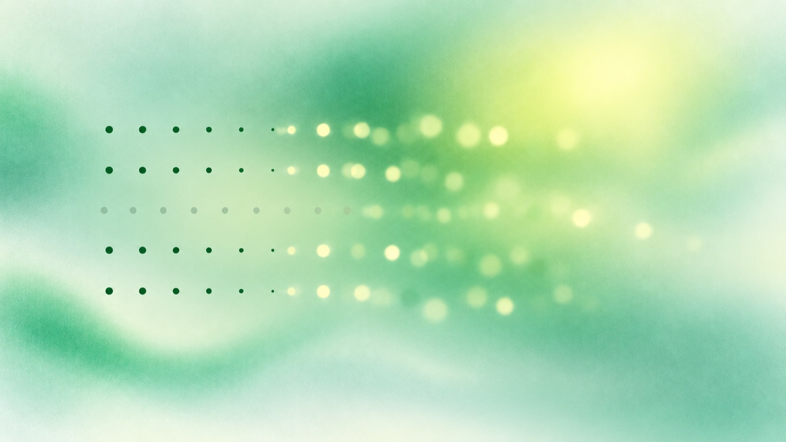
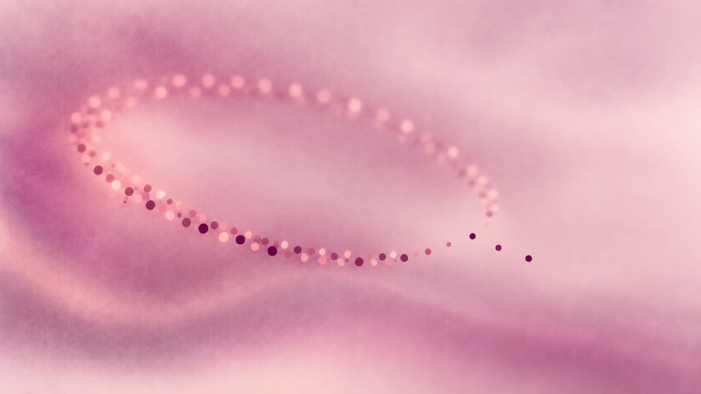

Research
Methods, experiments, and notes on marketing analytics, consumer insights, and text mining: how the approaches work, what they reveal, and where their limits lie.
What LLM Summaries Miss in Customer Feedback
How summaries of customer feedback can lose rare issues, even when you ask for them.

Reducing LLM Costs with Prompt Caching
How moving one changing field reduced the observed cost of a DeepSeek labeling job by about 26%.

From 113,518 Reviews to 23 Topics
How to discover useful topics in customer reviews and turn them into a consistent list for analysis.
Reading 200,000 Reviews with LLMs: Without Overpaying
How output format, reasoning settings, caching, and batch size changed the cost of labeling customer reviews.

Reading Customer Opinions at Scale
Why customer text is worth analyzing, how the methods evolved from keywords to language models, and what each approach can and cannot do.
Nothing in this topic yet.